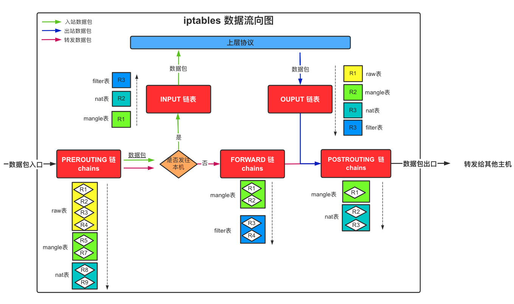
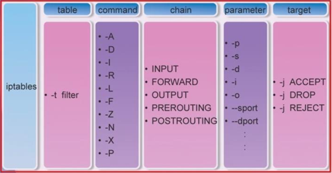
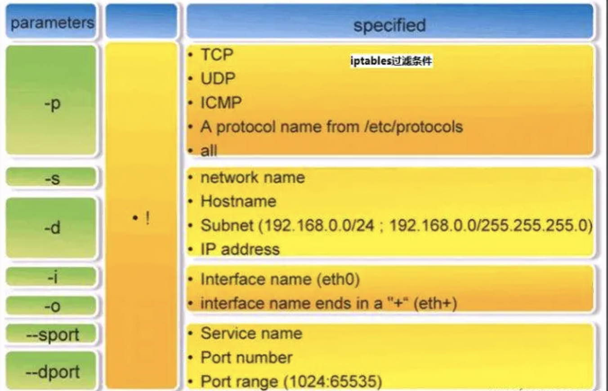

iptables
一、简介
iptables其实不是真正的防火墙，我们可以把它理解成一个客户端代理，用户通过iptables这个代理，将用户的安全设定执行到对应的netfilter安全框架"中，netfilter位于内核空间。
自1995年ipfwadm开始进入1.2.1的核心，Linux的防火墙实现有很长的时间了。Ipfwadm实现了标准的tcp/ip包过滤功能，比如过滤源地址与目的地址以及端口过滤。早在1999年第一个稳定的2.2.0核心中防火墙的实现被ipchains替代了，ipchains的新功能包括支持规则链，碎片包控制，较好的网络地址翻译功能（NAT）以及其他一些有用的改进。我们需要明白Linux防火墙包括核心级代码（通常是可加载核心模块或者核心源程序的补丁）和用户级代码（一个配置的工具，比如/usr/bin/ipchains，这是用来插入包规则到核心空间的）因此无论如何，只要新的linux防火墙代码被引入，核心和用户空间的有关代码都要改写。
2001年2.4的核心完成了，iptables出现了。它引入了很多重要的改进，比如基于状态的防火墙，基于任何TCP标记和MAC地址的包过滤，更灵活的配置和记录功能，强大而且简单的NAT功能和透明代理功能，通过速度限制实现DoS的阻止。
然而，最重要变化是引入了模块化的架构方式。比如，ipchains和ipfwadm兼容模式是通过一个核心模块的设置实现的，该模块能够在运行的核心中插入，以便提供相应的通讯功能。在附加的变化中，用户自定义编码功能已经成为了可能，比如过滤一定范围的端口，根据TTL值和包的到达时间进行判断，对自定义的协议进行状态监视，对随机的数据包进行监视等，这些目前都还不是iptable的一部分，但是在未来将被实现。很多很有趣的新模块已经完成了。编写一个可加载的核心模块来创建核心级代码，通过用户级代码实现控制过滤器的行为。
二、基础知识
1、iptables和netfilter的关系
iptables其实是一个命令行工具，位于用户空间，我们用这个工具操作真正的框架netfilter。
netfilter/iptables（下文中简称为iptables）组成Linux平台下的包过滤防火墙，与大多数的Linux软件一样，这个包过滤防火墙是免费的，它可以代替昂贵的商业防火墙解决方案，完成封包过滤、封包重定向和网络地址转换（NAT）等功能。
2、iptables传输数据包的过程
① 当一个数据包进入网卡时，它首先进入PREROUTING链，内核根据数据包目的IP判断是否是发往本机的（本机的任何一个接口IP地址），那么这个网络包将被认为是流向本机的。
② 如果数据包就是进入本机的，它就会沿着图向下移动，到达INPUT链。数据包到了INPUT链后，任何进程都会收到它。本机上运行的程序可以发送数据包，这些数据包会经过OUTPUT链，然后到达POSTROUTING链输出。
③ 如果数据包是要转发出去的，且内核允许转发，数据包就会流向FORWARD链进行处理（是否转发或拦截），然后到达POSTROUTING链（是否修改数据包的地 址等）进行处理。

报文的链流向：
- 到本机某进程的报文：
PREROUTING --> INPUT - 由本机转发的报文：
PREROUTING --> FORWARD --> POSTROUTING - 由本机的某进程发出报文（通常为响应报文）：
OUTPUT --> POSTROUTING
报文到达链后匹配表的优先顺序：
raw ==> mangle ==> nat ==> filter
3、链chains
- 链的作用：容纳各种防火墙规则
- 链的分类依据：处理数据包的不同时机
内置链：
- PREROUTING：在进行路由选择前处理数据包（做目标地址转换）
- INPUT：处理入站数据包
- FORWARD：处理转发数据包
- OUTPUT：处理出站数据包
- POSTROUTING：在进行路由选择后处理数据包（对数据链进行源地址修改转换）
4、表tables
- filter表：负责过滤功能，防火墙；内核模块：iptables_filter
- nat表：网络地址转换功能；内核模块：iptable_nat
- mangle表：拆解报文，做出修改，并重新封装的功能；内核模块：iptable_mangle
- raw表：关闭nat表上启用的连接追踪机制；内核模块：iptable_raw
三、iptables规则
规则（rules）其实就是网络管理员预定义的条件
规则一般的定义为“指定什么样的数据包头符合什么的条件，就怎么样处理这个数据包”
- 规则的作用：对数据包进行过滤或处理
- 规则存储在内核空间的信息
- 包过滤表中，这些规则分别指定了
源地址、目的地址、传输协议（如TCP、UDP、ICMP）和服务类型（如HTTP、FTP和SMTP）等。当数据包与规 则匹配时，iptables就根据规则所定义的方法来处理这些数据包，如放行（accept）、拒绝（reject）和丢弃（drop）等。 - 配置iptables防火墙的主要工作就是添加、修改和删除这些规则。
1、规则定义
⓪语法格式
iptables [ -t 表名 ] 命令选项 ［链名］［匹配规则］［-j 处理动作］
# 表名 必须是 raw， nat，filter，mangle 中的一个。默认指filter表
# 不指定链名时，默认指表内的所有链
# 除非设置链的默认策略，否则必须指定匹配条件
# 命令选项、链名、处理动作使用大写字母，其余均为小写
①命令选项
规则管理命令选项：
- -A：在指定链的末尾添加（append）一条新的规则
- -D：删除（delete）指定链中的某一条规则，可以按规则序号和内容删除
- -I ： 在指定链中插入（insert）一条新的规则，默认在第一行添加
- -R：修改、替换（replace）指定链中的某一条规则，可以按规则序号和内容替换
查看命令选项：
- -L ：列出（list）指定链中所有的规则进行查看
- --line-numbers：查看规则时，显示规则的序号
- -n ：使用数字形式（numeric）显示输出结果
- -v：以更详细的方式显示规则信息
链管理命令（这都是立即生效的）：
- -E ：重命名用户定义的链，不改变链本身
- -F ：清空（flush）
- -N：新建（new-chain）一条用户自己定义的规则链
- -X ：删除指定表中用户自定义的规则链（delete-chain）
- -P ：设置指定链的默认策略（policy）
- -Z ：将所有表的所有链的字节和数据包计数器清零
②匹配规则
1) 通用匹配
- 协议匹配:
-p [协议名] - 地址匹配
-s [源地址]-d [目标地址]
- 接口匹配
-i [入站网卡]-o [出站网卡]
2) 隐含匹配
端口匹配
-sport [源端口]-dport [目标端口]
TCP连接标记匹配：
--tcp-flags [列表1：检查范围] [列表2：被设置的标记]- 有两个参数列表，列表内部用逗号为分隔符，两个列表之间用空格分开
- LIST1用作参数检查，LIST2用作参数匹配。
可用标志有：
- SYN( 同步; 表示开始会话请求 ),
- ACK（应答）,
- FIN（结束; 结束会话），
- RST(复位;中断一个连接)
- PSH（推送; 数据包立即发送），
- URG（紧急 ），
- ALL（指选定所有的标记），
- NONE（指未选定任何标记）
iptables -A INPUT -p tcp –tcp-flags SYN,FIN,ACK SYN # 表示SYN、ACK、FIN的标志都检查，但是只有SYN匹配 iptables -A FROWARD -p tcp –tcp-flags ALL SYN,ACK # 表示ALL（SYN，ACK，FIN，RST，URG，PSH）的标志都检查，但是只有设置了SYN和ACK的匹配。
ICMP类型匹配：
--icmp-type [ICMP类型]
3) 显式匹配(-m):
iptables可使用额外的扩展模块进行显示条件匹配，详情参考第四章节


③处理动作
动作也可以分为基本动作和扩展动作
- ACCEPT：允许数据包通过。
- DROP：直接丢弃数据包，不给任何回应信息，这时候客户端会感觉自己的请求泥牛入海了，过了超时时间才会有反应。
- REJECT：拒绝数据包通过，必要时会给数据发送端一个响应的信息，客户端刚请求就会收到拒绝的信息。
- SNAT：源地址转换，解决内网用户用同一个公网地址上网的问题。
- MASQUERADE：地址伪装。是SNAT的一种特殊形式，适用于动态的、临时会变的ip上。
- DNAT：目标地址转换。
- REDIRECT：在本机做端口映射
- MASK : 做防火墙标记
- RETURN : 返回调用链
- LOG：在/var/log/messages文件中记录日志信息，然后将数据包传递给下一条规则，也就是说除了记录以外不对数据包做任何其他操作，仍然让下一条规则去匹配。
--log-level LEVEL: 日志的等级--log-prefix FREFIX: 日志的提示语句的前缀
2、规则管理
①查看规则
# 查看表中的规则
iptables -L -t filter
# 查看链中的规则
iptables -L INPUT
iptables -L FORWARD --line-numbers
# 查看POSTROUTING链nat表中的规则
iptables -L POSTROUTING -t nat
iptables -L PREROUTING -t nat --line-numbers
②删除规则
# 删除所有的规则
iptables -F
# 删除链中指定的规则
iptables -D FORWARD 1
# 删除链中指定表的规则
iptables -D POSTROUTING -t nat 1
③添加规则
# 在指定链的末尾添加（append）一条新的规则
iptables -A FORWARD -s 10.8.0.10 -d 192.168.1.5 -j DROP
# 在指定链中插入（insert）一条新的规则，默认在第一行添加
iptables -I FORWARD -s 10.8.0.10 -d 192.168.1.5 -j DROP
3、规则的匹配顺序
①按自上而下的顺序依次匹配，匹配即停止（LOG策略例外）
②若找不到相匹配的规则，则按该链的默认策略处理
四、iptables的显示扩展模块
官方文档：https://ipset.netfilter.org/iptables-extensions.man.html
必须使用-m选项手动加载模块, 其扩展模块路径为:/lib64/xtables,其中大写的为目标扩展,小写的为规则扩展
1、模块管理
①查看Iptables已加载的模块
cat /proc/net/ip_tables_matches
# 查看内核已编译的模块
②查看内核支持的模块
ls /lib/modules/$(uname -r)/kernel/net/netfilter/*
# 或者
ls /lib/modules/nf_*
# 或者
ls /usr/lib/iptables/
③加载模块
modprobe 模块名
CentOS/Redhat
编辑/etc/sysconfig/iptables-config
IPTABLES_MODULES="模块1 模块2"
然后重启iptables
systemctl restart iptables
例如手动加载注释模块
OS=$(uname -r)
insmod /lib/modules/${OS}/kernel/net/netfilter/xt_comment.ko
iptables -D INPUT -p tcp -m multiport --dports 26721:26729,22313 -m comment --comment "bt_port" -j ACCEPT
2、模块语法
-m 扩展模块 --模块参数
查看模块的支持的参数：
iptables -m <match/module name> --help
# 如果不显示模块的详细参数，则说明该模块没有加载，无法使用
3、常见条件匹配模块示例
①multiport：多端口匹配模块
-m multiport --sport | --dport [端口列表]
iptables -A INPUT -p tcp -m multiport --dport 22,25,80,443 -j ACCEPT
②iprange：IP范围匹配模块
-m iprange --src-range [IP范围]
iptables -A FORWARD -p tcp -m iprange --src-range 192.168.1.10-192.168.1.20 -j ACCEPT
-m iprange --dst-range [IP范围]
iptables -t nat -A POSTROUTING -s 10.11.2.2/32 -p tcp -m multiport --dport 22,4000 -m iprange --dst-range 192.168.10.1-192.168.10.9 -j SNAT --to 192.168.1.2
③mac：MAC地址匹配模块
-m mac --mac-range [MAC地址]
iptables -A INPUT -m mac --mac-source 00:01:02:03:04:cc -j DROP
将来自macblock集合中的源MAC地址、目的端口为21033的TCP流量拒绝掉
ipset create macblock hash:mac
ipset add macblock 00:11:22:33:44:55
iptables -I INPUT -p tcp --dport 12033 -m set --match-set macblock srcmac -j DROP
tcpdump监控流量是否生效
tcpdump -i enp0s5 ether src host 00:11:22:33:44:55 and port 12033
设置定时移除拒绝MAC地址
apt install -y at
echo "ipset del 00:11:22:33:44:55" | at now + 5 minutes
④state：报文状态匹配模块
--state [报文状态]：多个state可以使用,号分隔
支持配置的报文状态：
ESTABLISHED：第一个成功穿越防火墙的报文之后所有的报文；NEW：一个连接的第一个报文，例如TCP连接中的SYN报文；RELATED：伴随连接的报文，即某个已经处于ESTABLISHED的连接所产生的报文，这些报文不属于第一条连接，但是的确是由第一条连接产生的；INVALID：如果一个包没有办法被识别，或者这个包没有任何状态，那么这个包的状态就是INVALID，我们可以主动屏蔽状态为INVALID的报文UNTRACKED：报文的状态为untracked时，表示报文未被追踪，当报文的状态为Untracked时通常表示无法找到相关的连接。
iptables -A INPUT -d 172.168.100.67 -p tcp -m multiport --dport 22,80 -m state --state NEW,ESTABLISHED -j ACCEPT
⑤string：字符串匹配模块
--algo {匹配算法: bm|kmp}
--string "字符串"
iptables -I OUTPUT -s 192.168.1.0/24 -m string --algo kmp --string "qq" -j REJECT
#使用kmp算法限制拒绝源地址192.168.1.0/24带有"qq"字符串的请求
iptables -I INPUT -m string --string "export/*" --algo bm -j DROP
⑥limit：连接数匹配模块
—limit: 平均速率，单位：个数/second ，个数/minute，个数/hour
--limit-burst: 峰值数量，默认5个
iptables -I INPUT -d 172.16.100.7 -p tcp --dport 22 -m limit --limit 25/minute --limit-burst 100 -j ACCEPT
# 当达到100个连接后，才启用上述25/minute限制
⑦connlimit：连接数匹配模块
--connlimit-upto n : 当现在的连接数量低于或等于这个数量(n),就匹配
--connlimit-above n : 当现有的连接数量大于这个数量, 就匹配
iptables -A INPUT -d 172.16.36.61 -p tcp --dport 22 -m connlimit --connlimit-above 2 -j REJECT
⑧time：时间限制匹配模块
-m time --datestart --datestop --timestart --timestop
iptables -A INPUT -p tcp --dport 21 -s 192.168.1.0/24 -m time ! --weekdays 6,7 -m time --timestart 8:30 --timestop 18:00 -m connlimit --connlimit-above 5 -j ACCET
# 在工作时间，即周一到周五的8:30-18:00，开放本机的ftp服务给 192.168.1.0网络中的主机访问；并且数据下载请求的次数每分钟不得超过 5 个；
⑨set: 地址集合模块
- 普通的iptables链是线性的存储和过滤，在进行规则匹配时，是从规则列表中从头到尾一条一条进行匹配。这像是在链表中搜索指定节点费力
ipset 提供了把这个 O(n) 的操作变成 O(1) 的方法：就是把要处理的 IP 放进一个集合，对这个集合设置一条 iptables 规则。存储在带索引的数据结构中,这种结构即使集合比较大也可以进行高效的查找
ipset是iptables的扩展，允许创建管理匹配整个地址集合的规则。命令详解参考附录第2章节
-m set –match-set 地址集合名称
iptables -I INPUT -m set –match-set 集合名称 src -p tcp -j DROP
⑩Owner：用户模块
- –uid-owner 和 –gid-owner 这两个选项用来匹配数据包由哪个用户和哪个用户组所产生，它们的功能由 xt_owner.ko 模块提供，且仅适用在 OUTPUT 链 POSROUTING 链中。
- –uid-owner userid | username 该选项用来匹配数据包由哪个用户产生，因此可以利用这来限制该用户只能访问某些特定的网络服务，
- –gid-owner groupid | groupname 该选项和 –uid-owner 类似，它用来匹配某个用户组所产生的数据包。
groupadd no-internet
iptables -I OUTPUT 1 -m owner --gid-owner no-internet -j DROP
useradd -g no-internet username
参考：https://serverfault.com/questions/550276/how-to-block-internet-access-to-certain-programs-on-linux
五、iptables的内核调优
1、iptables的conntrack连接追踪优化
conntrack是netfilter的核心。有许多增强的功能，例如，地址转换（NAT），基于内容的业务识别（l7， layer-7 module）都是基于连接跟踪。
nf_conntrack模块在
kernel 2.6.15（2006-01-03发布）被引入，支持ipv4和ipv6，取代只支持ipv4的ip_connktrack，用于跟踪连接的状态，供其他模块使用。iptables的连接追踪表最大容量是
/proc/sys/ipv4/ip_conntrack_max设置的, 链接达到各种状态的超时后,会从表中删除,当模板满载时, 后续的链接可能会超时跟踪的连接用
哈希表存储，每个桶（bucket）里都是1个链表，默认长度为4KB。netfilter的哈希表存储在内核空间，这部分内存不能swap哈希表大小 ：64位的最大连接数/8； 32位的最大连接数/4
在64位下，当CONNTRACK_MAX为
1048576，HASHSIZE 为262144时，最多占350多MB连接跟踪调优计算公式
CONNTRACK_MAX（最大几率的连接条数） = 内存个数*1024*1024*1024/16384/2 = ***Buckets（哈希表大小） = CONNTRACK_MAX / 4 = ***（Byte字节）跟踪数暂用最内存大小 = CONNTRACK_MAX * 300（Byte字节）= ***（Byte字节）
异常现象：
- 丢包
可调优参数
哈希表桶大小
注：net.netfilter.nf_conntrack_buckets 不能直接改（报错）
# 临时生效 echo 262144 > /sys/module/nf_conntrack/parameters/hashsize # 重启永久生效 新建文件：/etc/modprobe.d/iptables.conf options nf_conntrack hashsize = 32768最大追踪连接数
注：加大max值, 也会加大内存的压力
# 临时生效 sysctl -w net.nf_conntrack_max = 393216 sysctl -w net.netfilter.nf_conntrack_max = 393216 # 永久生效 echo "net.nf_conntrack_ma=393216" >> /etc/sysctl.conf echo "net.netfilter.nf_conntrack_max=393216" >> /etc/sysctl.conf sysctl -p响应时间
net.netfilter.nf_conntrack_tcp_timeout_close_wait: # CLOSE_WAIT是被动方收到FIN发ACK，然后会转到LAST_ACK发FIN，除非程序写得有问题，正常来说这状态持续时间很短。默认 60 秒 # 临时生效 sysctl -w net.netfilter.nf_conntrack_tcp_timeout_established=300 sysctl -w net.netfilter.nf_conntrack_tcp_timeout_time_wait=120 sysctl -w net.netfilter.nf_conntrack_tcp_timeout_close_wait=60 sysctl -w net.netfilter.nf_conntrack_tcp_timeout_fin_wait=120 # 永久生效 echo "net.netfilter.nf_conntrack_tcp_timeout_established=300" >> /etc/sysctl.conf echo "net.netfilter.nf_conntrack_tcp_timeout_time_wait=120" >> /etc/sysctl.conf echo "net.netfilter.nf_conntrack_tcp_timeout_close_wait=60" >> /etc/sysctl.conf echo "net.netfilter.nf_conntrack_tcp_timeout_fin_wait=120" >> /etc/sysctl.conf sysctl -p
六、iptables应用
1、防火墙
①防止ACK欺骗
拒绝TCP标记为SYN/ACK但连接状态为NEW的数据包，
iptables -A INPUT -p tcp --tcp-flags SYN,ACK SYN,ACK -m state --state NEW -j DROP
②防止TCP Null扫描
iptables -A INPUT -p tcp --tcp-flags ALL NONE -j DROP
③防止Xmas扫描
iptables -A INPUT -p tcp --tcp-flags ALL FIN,URG,PSH -j DROP
④限流/防止端口DoS攻击
iptables -A INPUT -p tcp --dport 80 -m limit --limit 25/minute --limit-burst 100 -j ACCEPT
# -m limit: 启用limit扩展，限制速度。
# --limit 25/minute: 允许最多每分钟25个连接
# --limit-burst 100: 当达到100个连接后，才启用上述25/minute限制
⑤限制主机服务时间
在工作时间，即周一到周五的8:30-18:00，开放本机的ftp服务给 192.168.1.0网络中的主机访问；并且数据下载请求的次数每分钟不得超过 5 个；
iptables -A INPUT -p tcp --dport 21 -s 192.168.1.0/24 -m time ! --weekdays 6,7 -m time --timestart 8:30 --timestop 18:00 -m connlimit --connlimit-above 5 -j ACCET
⑥丢弃无效数据包
iptables -A INPUT -m conntrack --ctstate INVALID -j DROP
⑦关键词屏蔽
iptables -I FORWARD -p udp --dport 53 -m string --string "tencent" -m time --timestart 8:15 --timestop 20:30 --days Mon,Tue,Wed,Thu,Fri,Sat -j DROP
iptables -I FORWARD -p udp --dport 53 -m string --string "TENCENT" -m time --timestart 8:15 --timestop 20:30 --days Mon,Tue,Wed,Thu,Fri,Sat -j DROP
iptables -I FORWARD -p udp --dport 53 -m string --string "qq.com" -m time --timestart 8:15 --timestop 20:30 --days Mon,Tue,Wed,Thu,Fri,Sat -j DROP
iptables -I FORWARD -s 10.113.0.0/24 -m string --string "ay2000.net" -j DROP # 关键词屏蔽
iptables -I FORWARD -s 10.113.0.0/24 -m string --string "eroticism" -j DROP
⑧防止外网使用内网IP欺骗
iptables -t nat -A PREROUTING -i eth0 -s 10.0.0.0/8 -j DROP
iptables -t nat -A PREROUTING -i eth0 -s 172.16.0.0/12 -j DROP
iptables -t nat -A PREROUTING -i eth0 -s 192.168.0.0/16 -j DROP
⑨禁Ping
# 允许本机ping别的主机；但不开放别的主机ping本机；
iptables -A OUTPUT -p icmp --icmp-type 8 -j ACCEPT
iptables -A INPUT -p icmp --icmp-type 0 -j ACCEPT
2、NAT网络地址转换
iptable上中包含一个NAT表，其中有两条缺省的PREROUTING和 POSTROUTING 链，在这两条链上配置规则可以实现NAT功能。
①SNAT源地址目标转换
概念
SNAT(Source Network Address Translation)是指在数据包从网卡发送出去的时候，把数据包中的源地址部分替换为指定的IP。
适用于由局域网中的主机发起连接的情况。报文在经过NAT路由器时，将IP报文中的源IP地址转换为一个有效的广域网地址；在服务器给一个在私有网络中的主机返回响应报文时，目的IP地址就是这个局域网对外的广域网地址。报文到达NAT路由器的时候，路由器要将该报文分发给对应的主机，将IP报文的目的IP地址转换为私有网络地址
涉及到iptables中的链表
POSTROUTING链中的nat表
应用场景
局域网主机共享单个公网IP地址接入Internet
做法：
设置能上外网的那一台主机(192.168.1.2)的iptables，一旦接收到来自局域网(192.168.1.0/24)的数据，修改数据包的源IP地址为本机IP地址，然后就转发出去。
前提
有公网IP地址绑定
内核设置
net.ipv4.ip_forward=1，开起路由转发功能# 查看内核是否启用路由转发功能 sysctl -a | grep "ip_forward" 或者 sysctl net.ipv4.ip_forward # “net.ipv4.ip_forward=1”即可表示成功开启 # 临时设置内核启用路由转发功能。重启失效 sysctl -w net.ipv4.ip_forward=1 或者 echo 1 >/proc/sys/net/ipv4/ip_forward # 永久设置内核启用路由转发功能。 echo "net.ipv4.ip_forward = 1" >> /etc/sysctl.conf && sysctl -p
Iptables 设置
iptables -t nat -A POSTROUTING -s 192.168.1.0/24 -j SNAT --to 192.168.1.2
iptables -t nat -A POSTROUTING -s 192.168.1.26/32 -p tcp --dport 3306 -d 192.168.1.88/32 -j SNAT --to 192.168.1.2
局域网内想上外网的主机或者路由器想添加自定义路由策略
route add 0.0.0.0 gw 192.168.1.2
②DNAT目标网络地址转换
DNAT(Destination Network Address Translation)是又称为“端口转发”，适用于由广域网上的主机发起连接的情况。当广域网的主机访问NAT路由器的广域网端口时，可以将NAT路由器的广域网的端口映射到局域网内的某个IP地址的某个端口，这样就可以实现广域网主机访问局域网内的资源。
iptables -t nat -I PREROUTING -d 公网IP -p tcp -m tcp --dport 公网port -j DNAT --to-destination 10.10.223.12-10.10.223.20:8080（内网）
# 对于在云上绑定公网IP地址的ECS主机做DNAT，公网IP地址要写成ECS的内网地址。因为云厂商的公网IP也是使用SNAT实现的，通过公网IP访问ECS的所有流量请求，已经将目标地址改成ECS的内网地址啦。
# 例如阿里云上一台ECS绑定弹性公网IP地址123.11.12.13，内网地址为192.168.1.8，还有一台ECS，内网地址为192.168.1.9，上面部署了MYSQL。想通过弹性公网IP地址访问MySQL。则在192.168.1.8这台ECS中做DNAT的时候，可以这样配置
# iptables -t nat -I PREROUTING -d 192.168.1.8 -p tcp --dport 33306 -j DNAT --to-destination 192.168.1.9:3306
附录
1、TCP连接状态
https://blog.mimvp.com/article/44678.html
2、使用SystemD管理iptables规则
bash -c 'cat > /etc/systemd/system/iptables-nat.service << EOF
[Unit]
Before=network.target
[Service]
Type=oneshot
# DNAT iterms
ExecStart=/sbin/iptables -t nat -A PREROUTING -d 192.168.1.2 -p tcp --dport 3308 -j DNAT --to-destination 192.168.1.6:3306
# SNAT iterms
ExecStart=/sbin/iptables -t nat -A POSTROUTING -s 192.168.1.0/24 -j SNAT --to 192.168.1.2
# Delete DNAT and SNAT iterms
ExecStop=/sbin/iptables -t nat -D PREROUTING -d 192.168.1.2 -p tcp --dport 3306 -j DNAT --to-destination 192.168.1.6:3306
ExecStop=/sbin/iptables -t nat -D POSTROUTING -s 192.168.1.0/24 -j SNAT --to 192.168.1.2
[Install]
WantedBy=multi-user.target
EOF' && \
systemctl daemon-reload && \
systemctl start iptables-nat.service && \
iptables -L PREROUTING -t nat --line-numbers && \
iptables -L POSTROUTING -t nat --line-numbers && \
systemctl enable iptables-nat.service
3、ipset命令
- 官网：https://ipset.netfilter.org/
- 文档：https://ipset.netfilter.org/ipset.man.html#lbBF
- ipset默认可以存储65536个元素，使用maxelem指定数量
- 不支持0.0.0.0/0 ，可以替换为
0.0.0.0/1，128.0.0.0/1 - 需要内核版本高于2.6.32
①安装ipset命令
yum install -y ipset
apt install -y ipset
apk add -y ipset
②ipset语法规则
# 创建集合
ipset (create | -N) 集合名称 集合存储方法:记录类型1[,数据类型2[,数据类型3]] [ 集合存储方法:记录类型支持的参数 ]
# 支持的集合储存方法
- bitmap：仅支持ip、port、mac记录类型
- hash：仅支持net、iface、mac、ip、port、mark记录类型
- list: 仅支持集合间的继承关联关系
# 支持的记录类型
- ip：IP地址，例如1.2.3.4
- net：IP地址网络段，例如1.2.3.0/24
- mac：MAC地址，例如1A:2B:3C:4D:5E:6F
- port：协议类型:端口，例如[udp/tcp]:23、[udp/tcp]:21-23
- iface：网卡，例如eth0
- mark: 例如0x63，值在0~4294967295之间
# 例如：ipset create whitelist hash:ip,port
# 查看集合存储方法:记录类型支持的参数
ipset help 集合存储方法:记录类型
# 例如：ipset help hash:ip,port
# 集合中添加记录
ipset (add | -A) 集合名称 记录
# 例如：ipset add whitelist 192.168.1.7,tcp:21-22
# 查看集合。不加集合名称是查看所有的集合
ipset [list | -L) [集合名称]
# 例如：ipset -L whitelist
# 删除集合中的记录
ipset (del | -D) 集合名称 记录 [ DEL-OPTIONS ]
# 例如：ipset del whitelist 192.168.1.7,tcp:21
# 删除集合，不能有任何下游依赖 。不加集合名称是删除所有集合
ipset (destroy | -X) [集合名称]
# 例如：ipset destroy whitelist
# 清空集合，不加集合名称是清空所有
ipset (flush | -F) [集合名称]
# 例如：ipset flush
# 将ipset规则保存到文件，不加集合名词是保存所有集合，不加-f是输出记录到标准输出
ipset (save | -S) [集合名称] [-f 文件名]
# 例如：ipset save whitelist -f iptbales-whitelist-ip.txt
# 导入ipset规则，不加-f是从标准输入读取规则
ipset (restore | -R) [-f 文件名]
# 例如：ipset restore -f iptbales-whitelist-ip.txt
# 重命名集合
ipset (rename | -E) 旧集合名称 新集合名称
# 例如：ipset rename whitelist blacklist
# 测试一个ip是不是在集合中（要是ip在集合中返回0，如果ip不在集合中则返回非0）
ipset (test | -T) 集合名称 ip地址
# 例如：ipset test blacklist 192.168.1.7,tcp
4、攻击处理脚本
https://github.com/ppabc/cc_iptables/tree/master
参考
- https://github.com/ppabc/cc_iptables/tree/master
- https://www.jianshu.com/p/ee4ee15d3658
- http://www.zsythink.net/archives/1199/
- https://www.linuxidc.com/Linux/2018-08/153378.htm
- https://blog.csdn.net/u014721096/article/details/78626729
- https://www.jianshu.com/p/586da7c8fd42
- http://www.stearns.org/modwall/archives/tcpchk.v0.1.1
- https://blog.51cto.com/woyaoxuelinux/1906316